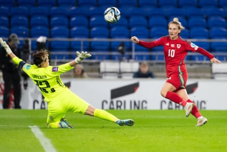

W hen Jess Fishlock walks into the hotel lounge everyone’s gaze is drawn towards her slight frame and, almost instantly, a cup of the midfielder’s favourite coffee appears on the table in front of her.
It has been like this for some years now but one of the finest footballers to play for Wales wears stardom lightly. If that is largely down to the 38-year-old’s humility and intelligence, it also reflects her journey’s origins.
Fishlock remembers the days when female footballers were unrecognised in public and virtually invisible to the game’s male establishment. It explains why being part of the first Wales Women side to qualify for a major tournament matters so much to a player belying advancing years in the manner of the stylistically not entirely dissimilar Luka Modric.
“It’s always nice to be able to do something that’s so much bigger than yourself,” she says in a distinctive hybrid Welsh-US Pacific coast accent, redolent of the ties that have bound her to Seattle Reign for the past 13 years. “ Qualifying for these Euros enables us to cement the legacy we’ve created for future generations. I hope we’ll be able to look back on Switzerland 2025 as something special that changed our nation.”
Jess Fishlock chips the ball over Maria Korenciova of Slovakia to score during the playoffs.Photograph: Athena Pictures/Getty Images
To appreciate why this milestone transcends sport, a potted history of a slow-burn cultural revolution is required. After all, it was not until 2019 that Wales Women wore shirts bearing their names, rather than just numbers, on the back. Rewind a little further and the country’s non-appearance in the 2005 Euros in England was not about inadequate results. The Football Association of Wales had declined to fund the female squad through the qualifying campaign.
Fishlock made her senior debut in 2006. Coincidentally, an odyssey that would lead to her becoming Wales’s record cap holder (162 at the last count) and all-time leading scorer (47 goals) began with a 3-2 defeat in Switzerland at a tiny ground in suburban Zurich. Back then she combined playing for Cardiff with working for a telecoms company but, when her talent was subsequently spotted by the then Dutch champions, AZ Alkmaar, everything changed.
At AZ she was sometimes coached by the men’s manager, Louis van Gaal. Fishlock credits him with teaching her the importance of controlling a game’s tempo and helping inspire an eclectic career in which she has won two Champions Leagues, at Frankfurt and Lyon, and collected almost every available domestic honour with Melbourne Victory and Seattle Reign.
“I pick the right moments to say: ‘We’re going forward,’ or: ‘We’re going to slow it down,’” she says, in a luxury resort hotel set amid the Vale of Glamorgan’s lush undulating countryside. “My position makes those tempo-setting decisions kind of important. But it’s about the team as a collective being on the same page and recognising those moments.”
Fishlock is a big believer in “living in the moment and enjoying it” but her impending presence in Lucerne and St Gallen for Euro 25 group-stage games against the Netherlands, France and England represents the fulfilment of a long cherished ambition. As her American wife, her former Reign teammate Tziarra King, says: “Jess has worked her whole life for this; Euro 2025 means everything to her.”
There were moments when the dream seemed near impossible but, after she overcame a ruptured anterior cruciate ligament in 2019 and the anguish of losing a World Cup qualification playoff against Switzerland in the final seconds of extra time in 2022, a watershed arrived 15 months ago. It is no exaggeration to say the appointment of the half-Welsh former Canada defender Rhian Wilkinson as head coach has altered an entire national narrative.

Jess Fishlock celebrates after Wales’s playoff victory over the Republic of Ireland in Dublin last year.Photograph: Shauna Clinton/Sportsfile/Getty Images
“Rhian’s transformed us,” says Fishlock of a coach who won the US’s National Women’s Soccer League in her previous job with Portland Thorns. “I think in the past we haven’t really had a manager that’s believed in us this much but Rhian’s unwavering. She’s raised the bar. From minute one, she introduced a set of non-negotiable standards, wielded the hammer and established whole new expectations. It’s brought the best out in us all. It’s always been an honour and a privilege to represent this country but she’s put us in a spot where we’re now able to compete against top teams.”
Fishlock believes that, for too long, Wales were conditioned to accept their supposed limitations. “In the past we would just agree, I guess, that maybe we couldn’t do this or we couldn’t do that but Rhian just doesn’t accept that,” she says. “I think she really, truly, does believe in us. She communicates very clearly and she’s instilled so much confidence. We knew we were good enough but we maybe just had a block. Now you can see us improving. We’ve raised our game; it’s just so exciting.
“We’ve had to meet Rhian’s standards; before we, perhaps, never had that challenge. I’m very proud that we’ve risen to it together. It hasn’t always been easy, we’ve had downs, but all of us have been pleasantly surprised by what we’ve been able to do.”
Until a 4-1 home defeat against Italy in June’s final Nations League game – with Fishlock chipping a spectacular consolation – Wales had not lost by more than a single goal under Wilkinson, as they registered a series of quietly encouraging results, including two draws with Sweden.
T he trick will be translating this promise into the victories that can open the door to Euro 2025’s knockout phase. “We’ve had some good Nations League performances yet never quite nailed the results we wanted,” she says. “But the goal, all along, was preparing for Switzerland. We’ve broken through several ceilings – now we have to burst a big one.”
It helps that Wilkinson tailors differing formations and starting XIs to specific opponents. “Our flexibility could surprise people this summer,” says Fishlock. “A lot of our squad can play different positions and read the game very well. That’s crucial; I think it will be key to our success.”
Like her former Reign teammate Megan Rapinoe, she has long campaigned for human rights and social justice and was awarded an MBE for services to women’s football and the LGBT community in 2018.

Jess Fishlock feels Wales have raised their game under Rhian Wilkinson.Photograph: AFF/Alamy
For the moment, though, the arguments she invariably calibrates as expertly as her measured through balls are on hold. “It’s really important not to be ignorant of what’s going on in the world,” says Fishlock. “But right now it’s also very important to remember we’re here to concentrate on doing our jobs in Switzerland.
Additional focus is provided by the men’s team’s manager, Craig Bellamy. “Craig and I have had a number of good conversations,” she says. “He’s a big supporter of our team and he cares so much about our country. Welsh people are very passionate; we’re very different from the English, we’re not frightened to come forward and say how we feel and what we think. It’s about how small but proud we are as a nation.”
The precedent set by the men’s team in reaching the semi-finals of Euro 2016 serves as a lodestar. “Our squad takes huge inspiration from that, and from every Welsh sporting achievement,” Fishlock says. “But now it’s up to us. We’ve got to get to Switzerland, get out of the group and write our own story.”